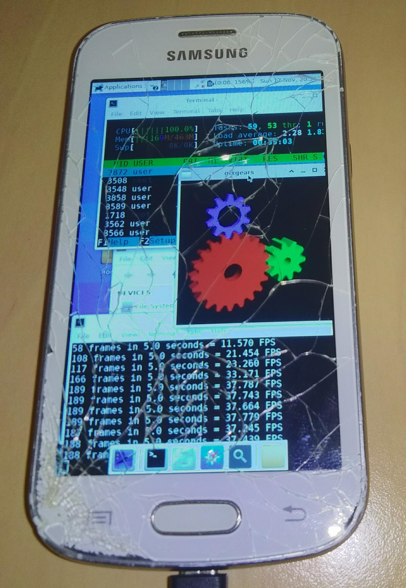

Samsung Galaxy Trend Lite (samsung-kylevess)
| This device is still running on armhf, although the processor supports armv7. If you own it, change it and test it that way. |
|
 Samsung Galaxy Trend Lite (samsung-kylevess) running htop, glxgears and thunar with the XFCE4 interface | |
| Manufacturer | Samsung |
|---|---|
| Name | Galaxy Trend Lite |
| Codename | samsung-kylevess |
| Released | 2013 |
| Category | testing |
| Original software | Android 4.1.2 on Linux 3.4.5 |
| postmarketOS kernel | 3.4.5 |
| Hardware | |
| Chipset | Broadcom BCM21664A |
| CPU | 2x 1.2 GHz Cortex-A9 |
| GPU | Broadcom VideoCore IV |
| Display | 480 x 800 TFT |
| Storage | 4 GB + SD card |
| Memory | 468 MB |
| Architecture | armv7 |
{kind=link}
| USB Networking |
Works
|
|---|---|
| Flashing |
Works
|
| Touchscreen |
Works
|
| Display |
Works
|
| WiFi | |
| FDE | |
| Mainline |
Partial
|
| Battery |
Works
|
| 3D Acceleration | |
| Audio | |
| Bluetooth | |
| Camera | |
| GPS | |
| Mobile data | |
| SMS | |
| Calls | |
| USB OTG / USB-C Role switching | |
| NFC | |
| Accelerometer | |
|---|---|
| Magnetometer | |
| Ambient Light | |
| Proximity | |
| Hall Effect | |
| Barometer | |
| Power Sensor | |
| Camera Flash | |
|---|---|
| Keyboard | |
| Touchpad | |
| USB-A | |
| HDMI/DP | |
| Ir TX | |
| Ir RX | |
| Stylus | |
| Haptics | |
| Ethernet | |
| FOSS bootloader | |
Contributors
- MayeulC
Maintainer(s)
- MayeulC
Users owning this device
- GeraltvonNVIDIA (Notes: Stucks on bootscreen Kernel 3.4.81 armhf)
- MayeulC
- Notnoelchannel
- Vipaol (Notes: Duos, broken touchscreen (less sensitive but works))
- W4trmelon (Notes: works and has android 4.1.2)
Device name
The device might be identified as a Samsung Galaxy Trend Lite, Samsung Galaxy Fresh, GT-S7390G or GT-S7390. It is also available as Samsung Galaxy Fresh Duos S7392 with dual-SIM card slots (source)
What works
- Flash kernel
- USB Network
- Screen
- Touch (
/dev/input/event2)
What does not work
- Audio
What has not been tested
- Compass, accelerometer, gyroscope, GPS, light sensor
- Bluetooth, NFC
- Wifi/GSM
- Camera
- Flash Rootfs
- Vibration motor
How to enter flash mode
- Press volume down and the home key, then press the power button.
- Maintain volume down and home pressed until a warning screen comes up
- press volume up to confirm, and plug the phone in if it wasn't already.
Note: the bootloader seems to be factory-unlocked.
How to enter Recovery
- Press volume up and the home key, then press the power button.
- Maintain volume up and home pressed until the recovery comes up
It is very easy to install a recovery: just flash a boot image to the RECOVERY partition with heimdall. You can get one from here, for example. These come with ADB and other means (zip) to flash the firmware. After you downloaded this, just use this command:
$ heimdall flash --RECOVERY ./Downloads/twrp-2860_kylevess.img
to flash TWRP into your Smartphone. Immediately after reboot you should press VOLUME UP + HOME to boot right into your newly flashed Recovery, because if you dont do so, it will be replaced with the stock-recovery again after the first (stock)-boot.
Installation
Follow this guide: Installation_from_recovery_mode to install pmOS via TWRP.
The original boot partition may be be installed there as well (when PMOS sits on the SD card), to Dual boot the phone (has not been tested yet).
Troubleshoot after Installation
If your device doesnt seem to boot or stucks at the bootscreen-logo you can try this: Display_manager#CanGraphical_issue to fix it.
Misc
The soc is a member of the hawaii platform, so it's likely that the kernel or some other components can be reused on other devices from the same platform.
Specs
Copy-pasted from here, which is quite informative.
CPU: Cortex-A9 (Little endian) Codename: KYLEVESS Display Panel: HX8369 (TFT) + TPS6115 (BACKLIGHT) Display Resolution: 480x800 (240dpi) EMMC: 4GB (Usable ~2.2GB) Family: KONA (BROADCOM) GPU: Broadcom VideoCore IV (? clock, ~50MB VRAM from RAM) Misc: WIFI/Tether, Bluetooth, HSPA+, GPS, FM-Radio PMU: BCM59054 Platform: HAWAII (BROADCOM) RAM: 468MB (not shared with GPU) Sensor: Accelerometer (BMC254) Shipped with Android 4.1.2 SoC: BCM21664A (1.2GHz) Touch Panel: IST3032 (Max 2 Touch Points?) WIFI/Bluetooth/FM-Radio: BCM4330
Kernel command line
- Charging:
lpcharge=1
- Normal startup:
lpcharge=0
- common:
console=ttyS2,115200n8 mem=482M cma0=0M carveout0=0M vmalloc=136M androidboot.console=ttyS2 logbuf_nocache=1 sec_debug.reset_reason=0x1A2B3C00 sec_debug.level=0 androidboot.debug_level=0x4f4c loglevel=0 sec_log=0x70000@0x9e900000 bootloaderfb=0x9e980000,0x180000 lpcharge=0 cordon=a96d6276bb2e489960e841dda003e846 androidboot.emmc_checksum=3 brd_ver=0 androidboot.serialno=42xxxxxxxxxxxxx
{kind=link}
{kind=link}